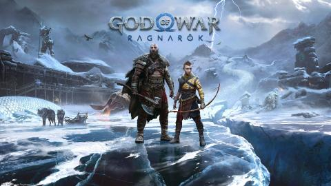
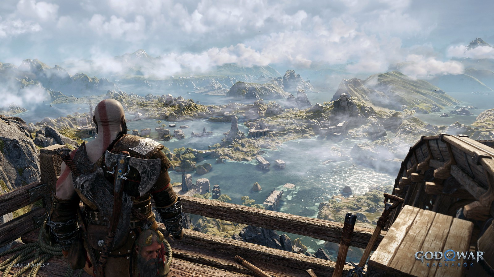

GOD OF WAR RAGNAROK
No podríamos estar más emocionados en Santa Monica Studio por finalmente compartir nuestro primer vistazo real a God of War Ragnarök a todos los fans que han sido muy pacientes esperando por una actualización.
Como pueden ver en el tráiler, estamos retomando unos cuantos años después de los eventos de God of War (2018). Los vientos helados de Fimbulwinter han llegado a Midgard, haciendo que la supervivencia para Kratos, Atreus y Mimir en la salvaje tierra Nórdica sea más retadora que antes.
Si bien el último juego se construyó sobre una gran cantidad de confianza y entendimiento entre padre e hijo, aún hay bastante complejidad en sus interacciones – especialmente después de la revelación de la gran herencia de Atreus y la profecía escondida que solo Kratos vio.

Agonía y Venganza
Dimos un breve vistazo a los dos principales antagonistas que enfrentarán en God of War Ragnarök: Freya y Thor.
Por las acciones de Kratos al final del anterior juego, Freya, una vez aliada convertida en enemiga, ha jurado venganza por la muerte de su hijo, Baldur.
Queríamos recordarles a los jugadores que Freya no solo es una poderosa y terrorífica usuaria de la magia Vanir, sino también que es una guerrera formidable por derecho propio. Enfurecida por la evasión de Kratos, Freya dirigirá todas las armas a su disposición hacia el asesino de su hijo.
También sufriendo la pérdida de sus hijos y medio hermano, la legendaria sed de sangre e ira de Thor se dirigirá a Kratos y Atreus.
Elementos clásicos de anteriores entregas
God of War Ragnarok ya tiene disponible su impresionante arte oficial, el cual ha desvelado un par de detalles curiosos que quizá vayan más allá.
No sabemos si habrá algún guiño a la trilogía original en Ragnarok, pero en el arte podemos ver un casco de espartano gigante. ¿Implica esto que veremos a Kratos convertido en gigante?
Otro detalle interesante del arte oficial es que podemos ver a Jörmungandr (hija de Angrboda) congelada bajo el hielo. Aparecen dos monstruos: un Dreki o Lindworm (una serpiente-dragón) y un Stalker (un centauro astado)
Tanto en el tráiler como en el arte, aparecen los cuervos. Estos son los ojos y oídos de Odín, y puede que vuelvan a ser un coleccionable en God of War Ragnarok.
Estamos muy felices de poder compartir una pequeña prueba de lo que hemos estado trabajando en Santa Monica Studio desde el lanzamiento de God of War en 2018.

Call of Duty: Vanguard no tendrá modos exclusivos en PS4 y PS5
El acuerdo entre Sony y Activision proporciona ciertos beneficios a los usuarios de las consolas de las japoneses.
Leer mas
SSD externos para PlayStation, XBOX y PC: ¿cuál es mejor comprar? Consejos y recomendaciones
Por más avances que realiza la industria del videojuego en materia de hardware, lo que se traduce en un mejor audio, más fotogramas por segundo y una calidad gráfica cada vez más atractiva, el almacenamiento sigue siendo un problema para muchos usuarios.
Leer mas
Todos los dispositivos compatibles con el nuevo PUBG: New State
La compañía ha querido desarrollar un gran juego para móviles y esto hace que ciertos dispositivos no puedan jugarlo. El rendimiento gráfico del nuevo juego es bastante alto, por lo que necesitarás un mínimo de potencia para poder disfrutarlo.
Leer mas
Rainbow Six LEAGUE
La Pro League es una liga profesional de deportes electrónicos para Tom Clancy's Rainbow Six Siege , alojada y organizada por ESL en asociación con Ubisoft Entertainment .
Leer masSiguenos a FullGamingNews